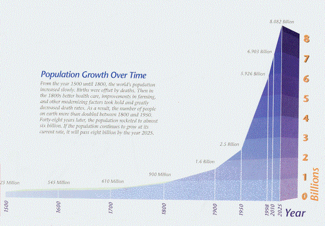

|
From:
North of Jewfish Creek
Monday, 4:42
p.m.
Dear Friend & Subscriber,
I want to show you a graph. I'm putting
it right here on the first page of this letter. Don't just look at it. Study
it and reflect on it some.

Some observations: In the 400 years
from the year 1500 to the year 1900, the population of this planet (earth)
increased at an average rate of just under three million people per year.
However, in the 100 years from 1900 to 2000, the average yearly increase was...
44 million per year!
Here's some thoughts you may not yet
have thunk:
1. There are
(at least by my calculations) more people alive today... than all the humans who
have ever lived since the dawn of civilization.
2. 99% of all the scientists who have ever lived... are
alive today.
3. 99% of all the geniuses who have ever lived... are alive
today.
4. 99% of all the idiots who ever lived... are alive today.
5. 99% of all
the peaceful, law-abiding people who have ever lived... are alive today.
6. 99% of all
the crooks, thieves, murderers, terrorists, etc. who have ever lived... are
alive today.
7. More info
is contained in one daily edition of the New York Times... than was
available in the entire 17th century.
8. More new
info comes out now every day... than an army of 10,000 people could absorb. In
fact, 10,000 people couldn't even catalog it all.
9. The
acceleration of the acceleration is accelerating. It's only going to be 21 more
years until there are seven BILLION people living on this ball of mud.
10. There is no
such thing as some sort of technology which has been developed... that won't
someday be used. You can't pass a law which will stop stem cell research, atomic
energy research, hi-tech pornography, or the development of new hybrid orchards.
Technology is now KING, right?
I beg to differ. If you had to have
someone write something for you, which would you prefer: (A) A triple-digit I.Q.
geek working with the most sophisticated computer ever built with a thousand
"How To Write" software programs... or... (B) William Shakespeare, Thomas
Jefferson, Ernest Hemingway or me working with a quill pen and parchment
paper?
Here Is A Story For You...
A shepherd was herding his flock in a
remote pasture when suddenly a brand new BMW advanced out of a dust cloud toward
him. The driver, a young man in a Broni suit, Gucci shoes, YSL tie and Ray Ban
sunglasses leans out of the window and asks the shepherd, "If I tell you
exactly how many sheep you have in your flock, will you give me one?"
The shepherd looks at the man who is
obviously a Princeton grad, then looks at his grazing flock and calmly answers,
"Sure, why not?"
The yuppie parks his car, whips out his
Sony notebook computer, connects to his AT&T cell phone, surfs to a NASA page on
the Internet where he calls up a GPS satellite navigation system to get an exact
fix on his location. He feeds that data to another NASA satellite which scans
the area in an ultra-high resolution photo.
The young man then opens the digital
photo in Adobe Photoshop and exports it to an image processing facility located
in Hamburg, Germany.
Within seconds, he receives an e-mail
on his "Palm Pilot" that the image has been processed and the data stored.
He then accesses a MS-SQL database
through an ODBC connected Excel spreadsheet with hundreds of complex formulas.
He uploads all of this data via an e-mail on his "Blackberry" and, after a few
minutes, receives a response.
Finally, he prints out a full-color,
150-page report on his hi-tech, miniaturized HP Laser jet printer and turns to
the shepherd and states, "You have exactly 1,586 sheep."
"That's right. Well, I guess you can
take one of my sheep," says the shepherd.
He watches the young man select one of
the animals and looks on, amused as the young man stuffs it into the trunk of
his car.
Then the shepherd
says to the young man, "Hey, if I can tell you exactly what your business is,
will you give me back my sheep?"
The young man
thinks about it for a second and replies, "Okay, why not?"
"You're a
consultant," says the shepherd.
"Wow! That's correct," answers
the yuppie. "But how did you guess that?"
"No guessing required. You showed up
here even though nobody called you... you want to get paid for an answer I
already knew to a question I never asked... and... you don't know shit about my
business.
"Now Give Me Back My Dog!"
Far fetched? Not at all. There are
plenty of high-I.Q., hi-tech wizards who have their heads shoved up so far their
hi-tech assholes, they too probably can't tell a sheep from a dog.
You know that kid I wrote about in my
last posting, Rob Sandusky? He's created a website which gets a BILLION hits a
day. He did it with a starting bankroll of $130.00.
But, guess what? He HATES to read. He
said other than what's required reading from school, he probably doesn't average
reading one book per year. He's part of a growing scary trend in America. The
last data available is from 2002 and, in that year, there were 89.9 million
Americans who had not read a single book. That's hideous. Why? Because it is
impossible for a non-reader to be even half-assed educated!
Anyone who lacks even a half-assed
education is going to come to grief. At the very least, that person will miss
out on the wondrous complexity of the world in which he inhabits.
Listen: I get thousands of
letters of praise. I read and treasure all of them... yet... I simply can't
respond to each of them. But, I want to share one of those letters with you.
It's from a man who sent me a gold-plated letter opener which I treasure along
with his letter (reproduced below).
|
T. Babatunde
Wednesday 16, 2:33pm
June 2004
Dear Gary,
I don't know how best to start this letter, but
I will write simply what comes to me and hope you get what it feels to me
to read your written work.
I don't know how or when I developed a
fascination for the written word. But something inside of me just latched
on to this like a dog to bone. And since that first time, I've tried to
read everything on copywriting I could find. Some of these books were a
little helpful, others were total nonsense.
But nothing broke the mold like... when I
discovered your website. I think your name was mentioned on some site I
was on, and I thought I should check you out. And I was literally blown
away.
I was blown away, because here at last is
someone giving valuable and life enhancing secrets without asking for
anything in return. I opened and read every envelope, with feverish
delight.
I downloaded and printed everything, and ran
out of ink.
I was afraid to leave the house to get another
cartridge, in case it won't be there when I come back. Since that time,
I've read almost everything about your work, and bought some of your
copywriting stuff I could afford.
The reason why I'm writing to you now is just
to say that each time I hear your name, my soul sings. It sings in joyful
delight and gratitude. I don't know if you're aware how generous your
newsletters are to several aspiring copywriters. One thing is, most people
who have been blessed in one way or another hoard their wisdom, and can't
bear to share it with the world. But you are different.
I wish to God I could write like you. I know
given time it would come. In this letter, I just want to say "Thank you."
Thank you for being the one person who inspires me. Thank you for your
giving. Thank you for being the only man on this planet dead or alive that
has single handedly given more to aspiring copywriters. Thank you, for you
are truly God's gift to writers.
I don't know if our paths will ever cross, but
if they do... I don't even know what to say. But simply "Thank you for
being you." And thank you for giving guys like me the opportunity to know
you.
I've enclosed a small gift as a token of my
appreciation. Maybe the next time you use this to open a letter, or your
hand touches it, I hope you remember there is a guy in lil' ol' England
who thinks the world of you. Hoping that your days continue to be enriched
and blessed.
With so much appreciation,
T. Babatunde |
Here's what's important about what this
man did. He printed-out all my newsletters... and... he read them by
holding a piece of real paper in his hand on which there were printed
words in real ink!
There's no other educational experience
in the world that comes close to that learning experience.
And, I want to publicly thank Mr.
Babatunde for his heartfelt letter.
Listen: I came as close to death as
I've ever been about 1-1/2 weeks ago. I was rushed by ambulance to Mercy
Hospital here in Miami with a resting pulse rate of 115 and a blood pressure of
222/122. It's the first time I've ever spent a night in the hospital in my
entire life.
They took X-rays of me one after the
other. They drew vial after vial of my blood and analyzed it. They hooked me up
to an EKG machine for 24-hours.
And, guess what? They could find
nothing "wrong" with me. My health, as far as a battery of health care
professionals could tell, is perfect. (I find that hard to believe.)
So, what was I suffering from? A plain
ol' fashioned "killer" nervous breakdown. Lately, like a lot of other people,
I've let my life slide down into a miasma of work, worry, stress and trying
desperately to juggle more balls than is humanly possible.
No more. That real-life nightmare was a
wake-up call for me. Even a perfectly healthy person can die of a stroke or
heart attack with a blood pressure reading as high as I had.
I'm back to the core fundamentals which
made my life work. I'm back doing road work on my treadmill, back working out at
the gym, back watching my eating habits... and... if I can't get all my work
done in an eight-hour day...
It Ain't Gonna Get Done!
All this relates to what I'm trying to
communicate in this letter. You, too, need to be concentrating on the core
fundamentals of life. And, one of those is reading!
Now we come to the really big lesson of
this day. Stop reading about how to write copy for a while. Stop reading about
marketing. Stop reading and trying to keep up with the latest computer
breakthroughs. Instead...
Read Books On Salesmanship!
I learned more about how to write copy
while selling encyclopedias door-to-door than from any other source.
End of lecture. That's it for this
issue.
| |
Sincerely, |
| |
 |
| |
Gary
(very happy to be alive)
Halbert |
P.S. You know
when they give you a really thorough EKG they attach an endless amount of
little round sticky things to your body. Each of these sticky things has a
piece of metal sticking up like a steel nipple. They hook these "nipples" up
to cables.
Anyway, the hospital sent me home with
so many sticky things attached to my body... I was still finding new ones and
pulling them off (it hurts!) after three days.
One last thing: This letter is
dedicated to Ken Kerr, one of the finest men I've ever met. He's in Intensive
Care at Scopps Hospital in La Jolla, California and his organs are shutting
down. I pray he gets to read this and, I hope all my readers will also send up a
prayer for him.
Peace.
Copyright © Gary C. Halbert. All Rights
Reserved. |